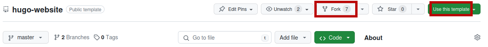
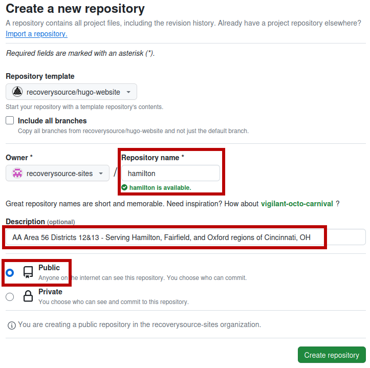

Start New Site¶
Full explanation of what needs to happen
How to update configuration
Heavy linking to previous resources in order to fully explain each step
Tutorial: Deploy a hugo template
New Website:
It is important to understand that deploying a website, maintaining the website itself, and maintaining the content on the website are three fundamentally different challenges.
The instructions on this page cover the initial setup and require a level of technical competency which may not be readily available; this should not stop you! Please, reach out on discord if you need help.
Continued maintenance is primarily limited to content updates.
Prerequisite: DNS¶
Domain Name Systems (DNS) are like a phone book for the internet. They tell your computer/phone where to find a website. The number looks much different than a phone number, but works exactly the same.
There are two primary options available for your domain name:
Use a subdomain of https://sober.page/:
Share your fork (if any) on discord and ask for help!
OR Create a Pull Request with a new CNAME
OR Open an Issue with a link to your website project
Register your own domain using a “DNS Registrar”:
The best options out there have shut down
This project transitioned from Porkbun (better interface) to Epik (better support/features)
A good rule of thumb is to avoid any service that offers to build your website (i.e. BlueHost)
You will need these addresses if hosting on GitHub:
A @ 185.199.108.153 185.199.109.153 185.199.110.153 185.199.111.153 AAAA @ 2606:50c0:8000::153 2606:50c0:8001::153 2606:50c0:8002::153 2606:50c0:8003::153 CNAME www <username|project>.github.io.
Initial Setup¶
This assumes you have a Domain Name (DNS) picked out and need to go from looking at a confusing repository to having a website published on the internet.
Create an account and log in to GitHub
You can (optionally) create a “github organization,” which is functionally equivalent to a “team”. This is not required to share your fork and can be set up later.
Make a copy of hugo-website, giving it a meaningful name and description

Choose
Forkif you would like us to watchaamodfor you (easier).Choose
Use this templateto create a copy without the link (safer).E.g. 
Note: Actions are enabled by default, but these will fail until a valid configuration is created.
Copy any example content (without
example-) and update as appropriate:example-config.yaml(live sample config)Focus on baseURL, title, descrition, phone, copyright, and aasites.
example-prebuild.yaml(live sample prebuild)Remove “example-” from the “meeting-data” and copy baseURL
Tweak “pdf-blurbs” to your liking
content/example-contact.mdRemove line:
draft: trueReplace example content with your own
Update
static/CNAMEwith the domain name (DNS) that was chosen earlier.Create local meeting information in
data/meetings.yamlThis can optionally be broken into one meeting per file (see Area 63 Meetings)
After making chanegs, wait for a successful build and deploy of your website
Open the
Settingspage of your repository then go toPagesand setSourcetoBranch[gh-pages]Verify DNS check in
Settings>Pagespasses before checkingEnforce HTTPS
{kind=link}
Interactive Maps¶
If you do not want display Google Maps on your site, then you can put a # in
front of “mapapikey” (in your config.yaml), similar to the comment above it.
The cost of this service is cumulative (across all sites), so we cannot provide a generice key. However, anyone can register for an account and create an API Key.
GitHub will warn administrators about an API key being discovered in a repository. This key cannot be kept secret and instead needs to be kept secure using the following settings:
Application restrictions:
*<your-domain>/*(e.g.area63aa.org/*)API restrictions:
Maps Embed API,Maps JavaScript API,Places API
Meeting Guide App¶
AAMod produces a JSON file that can be used by the Meeting Guide phone application.
This file will be available at: https://yourdomain.tld/meeting-times.json
Connecting your meeting information to this application requires filling out a
connection form. Where it asks for Site Sharing Key, the web address of
meeting-times.json should be provided.
Security Updates¶
Most website vulnerabilities involve user authentication and authorization. They attempt to find ways to act like an admin or bypass an admin check or convince someone to share their password. Truly static websites do not suffer these problems because there is no dynamic component to be exploited. You cannot exploit that which is not present! (user authentication, file uploads, page edits, etc.)
In other words … there is nothing for you to be concerned about. A security update for this project is currently inconceivable.